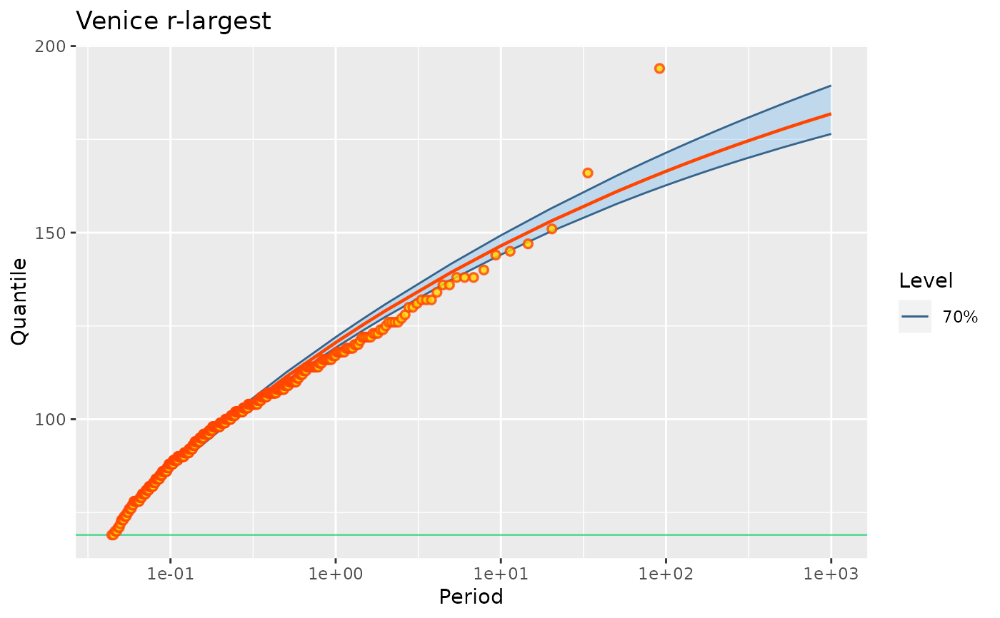

Create a Poisson-GP model object, usually by ML estimation.
Usage
poisGP(data = NULL, threshold, effDuration,
MAX.data = NULL, MAX.effDuration = NULL,
OTS.data = NULL, OTS.threshold = NULL, OTS.effDuration = NULL,
distName = "GPD2",
parIni = NULL,
estim = c("optim", "nloptr", "eval", "none"),
coefLower = c("lambda" = 0.0, "scale" = 0.0, "shape" = -0.90),
coefUpper = c("lambda" = Inf, "scale" = Inf, "shape" = Inf),
scale = FALSE,
trace = 0)Arguments
- data
Either a vector containing the observations for the "main" sample or an object describing heterogeneous data. In the second case,
datacan be of class"potData"(seepotData) or of class"Rendata"from the Renext package. Mind that the class"Rendata"does not yet have a creator, but randomRendataobjects can be created for testing by usingrRendata.- threshold
The main threshold as commonly understood in POT.
- effDuration
The effective duration of the observation period corresponding to the
data.- MAX.data
A list of numeric vectors corresponding to periods or blocks. Each vector contains the \(r\)-largest observations for the block, where \(r>0\) can vary across blocks. When a numeric vector is passed instead of a list, it is understood that there is only one MAX block.
- MAX.effDuration
A vector of positive numbers giving the durations of the MAX blocks (in the same order).
- OTS.data
A list of numeric vectors corresponding to periods or blocks. Each vector contains all observations for the block which exceeded the corresponding threshold as given in
OTS.threshold. So the number \(r \geq 0\) vary across blocks. When a numeric vector is passed instead of a list, it is understood that there is only one OTS block.- OTS.threshold
A vector of positive numbers giving the thresholds of the OTS blocks (in the same order). By construction all the elements of
OTS.data[i]are larger thanOTS.threshold[i]for each block indexi.- OTS.effDuration
A vector of positive numbers giving the durations of the OTS blocks (in the same order).
- distName
Character name of the distribution to be used for the excesses over the threshold. For now thids can be
"GPD2"corresponding toGPD2, or"exp1"corresponding toExp1. Note that in all cases the first parameter is a (the) scale parameter.- parIni
A named parameter vector. This will be used to set the values if
estimis"none"or to provide initial values in the other cases. WhenparIniisNULLthe parameter vector stored in the object as will containNAwhenestimis"none"or "good" initial values found by devoted function.- estim
Characterdefining the function and the method that will be used to maximise the likelhood. See Details.- coefLower, coefUpper
Named vectors of bounds for the parameters. The values can be infinite
Infor-Inf. However, note that without bounds on the shape parameter \(\xi\) the maximum likelihood is infinite and obtained for \(\xi = -1\). Note also that the bounds are ignored whenestimis set to"optim".- scale
Logical. If
TRUEthe observations indata,MAX.dataandOTS.dataare all divided by a common positive number in order to avoid numerical problems. This number is returned as thescaleDataelement of the returned list. Except from the numerical problems, the value of the scale does not impact the results such as the estimates of their covariance.- trace
Integer level of verbosity.
Value
A list with among which the following objects are found
- data
-
A copy of the data provided in
dataand the other formalsMAX.*orOTS.* - fitData
-
A modified version of
datawhere the observations that do not exceed the main threshold \(u\) are discarded and each remaining observation \(y_i\) is replaced by the corresponding excess \(y_i - u\). So only positive observations are found in the data vectors.
Details
The functions and methods used to maximise the likelihood depends
on estim as follows.
estim = "optim"The classicalstats::optimfunction is used withmethod ="BFGS". The derivatives are not used and nor do the bounds on the parameters given incoefLowerandcoefUpper.estim = "nloptr"Thenloptr::nloptrfunction is used with the"NLOPT_LD_BFGS"algorithm option. The derivatives are used as well as the bounds on the parameters, leading to "box constraints". The bounds can be used to fix the value of a GP parameter by using the same value incoefLowerandcoefUpper. For instance an exponential distribution can be fitted by using a zero value for the shape both incoefLowerandcoefUpper.estim = "eval"No optimisation is performed: the ratelambdacorresponding to the provided GP parameters is computed and the negative log-likelihood and its first derivatives are evaluated, allowing the determination of a (putative) covariance matrix for the estimates. The named vectorparInishould then contain values for the Poisson-GP parameters, and valid values for the GP parameters"scale"and"shape". This possibility can be used to check the results provided by other packages, e.g. to recompute return levels. Note however that the provided parameters may not be approximately maximising the likelihood and the corresponding results will then be misleading.estim = "none"No optimisation is performed. The log-likelihood and negative log-likelihoods remain NA, and the initial values are ignored.
Examples
## =====================================================================
## Use Garonne data from Renext
## =====================================================================
fit1p <- poisGP(data = Garonne$OTdata$Flow, threshold = 2900,
effDuration = 65,
MAX.data = Garonne$MAXdata$Flow,
MAX.effDuration = 143)
fit1R <- Renouv(Garonne, threshold = 2900, distname.y = "GPD",
plot = FALSE)
cbind(Renext = coef(fit1R), potomax = coef(fit1p))
#> Renext potomax
#> lambda 1.7257765 1.7260135
#> scale 1288.1036804 1287.2821401
#> shape -0.1652691 -0.1650343
## CAUTION when comparing log-likelihoods, see ?logLik.poisGP
cbind(Renext = logLik(fit1R), potomax = logLik(fit1p))
#> Renext potomax
#> [1,] -925.9804 -925.9749
## =====================================================================
## Use the 'venice' data from the 'ismev' package. Contains
## r-largest observations as a matrix with one row by year and NA.
## So some transformations are needed. Note that first
## of 'venice' must be removed, and that the 'venice' data from
## the evd package may misleadingly be used instead.
## =====================================================================
rm(venice)
#> Warning: object 'venice' not found
data(venice, package = "ismev")
MAX.data <- as.list(as.data.frame(t(venice[ , -1])))
MAX.data <- lapply(MAX.data, function(x) x[!is.na(x)])
MAX.effDuration <- rep(1, length(MAX.data))
fit2i <- ismev::rlarg.fit(venice[ , -1])
#> $conv
#> [1] 0
#>
#> $nllh
#> [1] 1139.09
#>
#> $mle
#> [1] 120.5479027 12.7840265 -0.1129418
#>
#> $se
#> [1] 1.36234055 0.54944881 0.01986948
#>
fit2R <- Renext::fGEV.MAX(MAX.data = MAX.data,
MAX.effDuration = MAX.effDuration)
fit2p <- poisGP(MAX.data = MAX.data,
MAX.effDuration = MAX.effDuration)
#> Warning: 'threshold' is smaller than the smallest observation
#> Warning: 'threshold' is smaller than the smallest observation
## To compare the coefficients we must use the "PP" coefficients
## of the poisGP object rather than the standard "poisGP"
## coefficients.
cbind("ismev" = fit2i$mle,
"Renext" = fit2R$estimate,
"potomax" = coef(fit2p, type = "PP"))
#> ismev Renext potomax
#> loc 120.5479027 120.5452617 120.5459990
#> scale 12.7840265 12.7831983 12.7838900
#> shape -0.1129418 -0.1129793 -0.1129545
## CAUTION when comparing log-likelihoods, see ?logLik.poisGP
## We choose here the "PP" type which usually makes the result
## comparable to those based on block maxima or on r-largest.
cbind("ismev" = -fit2i$nllh,
"Renext" = fit2R$loglik,
"potomax" = logLik(fit2p, type = "PP"))
#> ismev Renext potomax
#> [1,] -1139.09 -1139.09 -1139.09
## profile-likelihood confidence intervals on parameters
confint(fit2p)
#> , , 95%
#>
#> L U
#> lambda 24.749 31.087
#> scale 16.838 20.439
#> shape -0.133 -0.067
#>
autoplot(fit2p) + ggtitle("Venice r-largest")

## Now censor the MAX data. This can not be done with the
## other packages
fit3p <- poisGP(MAX.data = MAX.data,
MAX.effDuration = MAX.effDuration,
threshold = 100)
coef(fit3p)
#> lambda scale shape
#> 4.332673851 12.053243161 0.002246636
autoplot(fit3p) + ggtitle("Venice r-largest with threshold 100 cm")
##=====================================================================
## Use Garonne data from Renext again case "shape = 0",
## (exponential / Gumbel)
##=====================================================================
u <- 3001
fit3p <- poisGP(data = Garonne$OTdata$Flow,
threshold = u,
effDuration = 65,
MAX.data = Garonne$MAXdata$Flow,
MAX.effDuration = 143,
distName = "exp1")
fit3R <- Renouv(Garonne, threshold = u, distname.y = "exponential",
plot = FALSE)
## change parametrisation from Renext (rate -> scale)
## =================================================
est <- unname(coef(fit3R))
est[2] <- 1.0 / est[2]
names(est) <- c("lambda", "scale")
cbind(Renext = est, potomax = coef(fit3p))
#> Renext potomax
#> lambda 1.53889 1.538799
#> scale 1033.68946 1034.118803
## compare log-likelihoods CAUTION see ?logLik.poisExp
## ===================================================
fit3pe <- poisGP(data = Garonne$OTdata$Flow,
threshold = u,
effDuration = 65,
parIni = est[-1],
MAX.data = Garonne$MAXdata$Flow,
MAX.effDuration = 143,
distName = "exp1",
estim = "eval")
#> Warning:
#> No optimisation performed. Inference results can be misleading.
cbind(Renext = logLik(fit3R), potomax = logLik(fit3pe))
#> Renext potomax
#> [1,] -857.0064 -857.0001
## use 'nloptr' optimisation
## =========================
fit3po <- poisGP(data = Garonne$OTdata$Flow,
threshold = u,
effDuration = 65,
MAX.data = Garonne$MAXdata$Flow,
MAX.effDuration = 143,
distName = "exp1",
estim = "nloptr")
## Return levels and inference
## ===========================
myRL <- RL(fit1p, trace = 0, conf = "prof", check = TRUE)
#> Use the 'autoplot' method on the resulting object to check the profile-likelihood results.
autoplot(myRL) +
ggtitle("prof. lik. inference on return levels")
#> Warning: Removed 554 rows containing missing values (`geom_line()`).
#> Warning: Removed 554 rows containing missing values (`geom_point()`).
 autoplot(RL(fit1p)) +
ggtitle("Return level plot (prof. lik. intervals)")
## confidence intervals on parameters
## ==================================
ci <- confint(fit1p, check = TRUE, type = "PP")
#> Use the 'autoplot' method on the result to check the results
#> Warning: Since 'check' is TRUE, 'out' set to "data.frame"
autoplot(ci)
#> Warning: Removed 15 rows containing missing values (`geom_line()`).
#> Warning: Removed 15 rows containing missing values (`geom_point()`).
autoplot(RL(fit1p)) +
ggtitle("Return level plot (prof. lik. intervals)")
## confidence intervals on parameters
## ==================================
ci <- confint(fit1p, check = TRUE, type = "PP")
#> Use the 'autoplot' method on the result to check the results
#> Warning: Since 'check' is TRUE, 'out' set to "data.frame"
autoplot(ci)
#> Warning: Removed 15 rows containing missing values (`geom_line()`).
#> Warning: Removed 15 rows containing missing values (`geom_point()`).